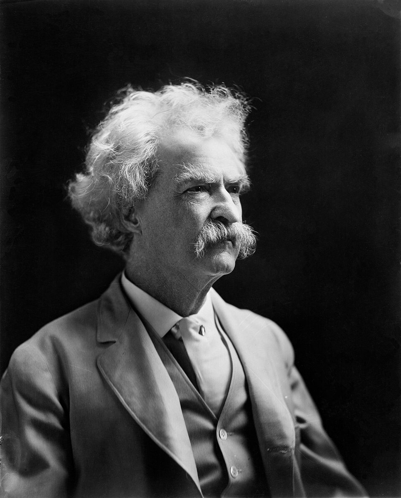

Mark Twain
Poikien seikkailu paljastaa aikuisten maailman säännöt.
Twainin huumori saa lukijan nauramaan ja huomaamaan samalla, kuinka ristiriitaisesti yhteisö voi toimia.
Etsi teokset kirjastostaElämä ja teokset
Mark Twain oli Samuel Langhorne Clemensin kirjailijanimi. Hän varttui Hannibalissa Mississippijoen varrella ja työskenteli muun muassa jokilaivan luotsina ja lehtimiehenä.
Tom Sawyerin seikkailut ilmestyi vuonna 1876. Huckleberry Finnin seikkailut julkaistiin Britanniassa 1884 ja Yhdysvalloissa 1885. Poikavuosien ympäristö sai romaaneissa sekä seikkailullisen että yhteiskuntaa arvostelevan muodon.
Tyyli ja teemat
Puheenomainen kerronta ja liioittelu avaavat tien terävään satiiriin. Henkilö saattaa pitää väärää asiaa itsestään selvänä ja toimia silti toista ihmistä kohtaan myötätuntoisesti. Erityisesti Huckleberry Finnissä orjuus ja rasismi kuuluvat kuvattuun yhteiskuntaan ja sen moraalisiin ristiriitoihin.
Vapaus · Kasvaminen · Satiiri
Aloita tästä
Tom Sawyerin seikkailut
Tom muuttaa koulun, kotityöt ja pikkukaupungin elämän mielikuvituksen seikkailuiksi. Huumorin alla kasvaa vastuu omista valinnoista.
Huckleberry Finnin seikkailut
Huckin ja Jimin jokimatka asettaa opitut käsitykset vastakkain koetun ystävyyden kanssa. Kertojan ääni on olennainen osa lukukokemusta.
Prinssi ja kerjäläinen
Samannäköiset pojat vaihtavat paikkaa ja näkevät Tudorien Englannin vallan ja köyhyyden eri puolilta. Seikkailu tekee yhteiskunnallisesta asemasta konkreettisen.
Kysy, milloin kertoja toistaa muiden opetuksia ja milloin hänen omat havaintonsa puhuvat niitä vastaan.